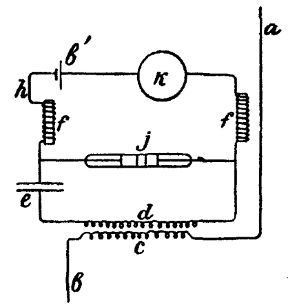
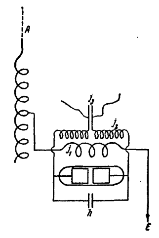

История беспроволочного телеграфа
Web-Quest
Радиотелеграф Г. Маркони
Радиотелеграф Г. Маркони
Одновременно с Поповым свою радиотелеграфную установку создал молодой итальянец Гульельмо Маркони. С детства он горячо интересовался электричеством, а потом увлекся идеей беспроволочного телеграфа. В 1896 году он собрал передатчик и приемник, очень похожие по своему устройству на те, которые изобрел Попов. В том же году Маркони привез свое изобретение в Англию. Мать его была англичанка, и благодаря ее связям он был хорошо принят на Британских островах. В 1896 году Маркони получил английский патент на свой радиотелеграф (это был первый патент, взятый на телеграфирование без проводов; таким образом, с формальной точки зрения, Маркони вполне справедливо считается изобретателем радио, так как первым сумел запатентовать свое изобретение).
В июне 1897 года было организовано акционерное общество для применения изобретения Маркони. В свои 23 года он проявил удивительную изобретательность и предприимчивость. С первых же шагов его предприятие получило солидную финансовую основу. При любой возможности Маркони старался демонстрировать, какие выгоды давало новое средство беспроводной связи. Так, в июне 1898 года должны были состояться традиционные парусные гонки в районе Дублина. Эти гонки всегда привлекали к себе всеобщее внимание. Маркони отправился в Дублин и договорился с одной из крупных ирландских газет, что будет передавать ей по радио с парохода, находившегося в районе гонок, все сведения, которые могут интересовать публику для помещения их в экстренных выпусках газеты.
Опыт удался полностью. В течение нескольких часов Маркони вел передачу, которая принималась редакцией. Полученные таким образом сведения опережали всякие другие, и газета значительно увеличила тираж. Для Маркони это тоже был большой успех: в короткий срок акционерный капитал его общества удвоился, достигнув 200 тысяч фунтов стерлингов. Это дало ему возможность быстро совершенствовать свой радиотелеграф. Через несколько лет он уже значительно опережал в своих разработках Попова.
Одним из главных элементов первых радиоприемников был когерер. Естественно поэтому, что основные усилия изобретателей, стремившихся усилить чувствительность приемных аппаратов, были направлены именно на его совершенствование. Маркони первый обратил внимание на важное свойство когерера, а именно - на зависимость его действия от величины приложенного к нему напряжения высокочастотных колебаний. Чтобы возможно полнее собрать энергию магнитного поля, создаваемого наведенным в антенне ничтожно малым током, необходимо было его усилить. Маркони нашел простой и остроумный способ решения этой проблемы. В 1898 году он включил в свой радиоприемник джиггер (что значит "сортировщик") - высокочастотный трансформатор, первичная обмотка которого включалась в одну цепь с антенной, а вторичная - подводилась к когереру. В том же году Маркони взял патент на эту схему.

Проводники a и b обозначают здесь цепь антенны, в которую была включена первичная обмотка джиггера c. В результате трансформации напряжение слабого антенного тока во вторичной цепи значительно возрастало. С джиггера d сигнал попадал на когерер j, к которому была подключена батарея b' и реле K, включавшее телеграфный аппарат, как это было в прежних схемах. Это простое нововведение позволило в несколько раз повысить чувствительность первых радиоприемных станций. Дальность передачи сразу повысилась с 30 до 85 миль.

J1 и Р - обмотки джиггера; h - конденсатор; А - антенна; Е - заземление.
(Из остальных элементов радиоприемника показан только когерер, поскольку подключение
их такое же, как и на предыдущих схемах.)
В том же году Маркони осуществил передачу через Ла-Манш. Явление электрического резонанса и было использовано для осуществления избирательной радиосвязи. Маркони одним из первых стал настраивать колебательные контуры передающей и принимающей станций на одну и ту же частоту. Для этого он, в частности, использовал свой джиггер, включая параллельно его вторичной обмотке конденсатор и получая таким образом колебательный контур. Схема передатчиков также была изменена включением в цепь антенны индуктивных катушек и конденсаторов, так что каждая передающая станция могла передавать сигналы с определенной частотой колебания волны. Поскольку теперь несколько радиостанций передавали сообщения каждая со своей частотой, то излучаемые ими волны возбуждали в приемной антенне переменные токи различных частот. Но приемник выбирал только те сигналы, частота которых совпадала с собственной частотой колебания его колебательного контура, ведь только в этом случае наблюдалось явление резонанса. Джиггер в этой схеме работал как фильтр и усиливал не любой антенный ток (как это было прежде), а выделял среди них ток той частоты, на которую был настроен данный приемник. С этого времени резонансные контуры стали неотъемлемой частью как приемных, так и передающих устройств.